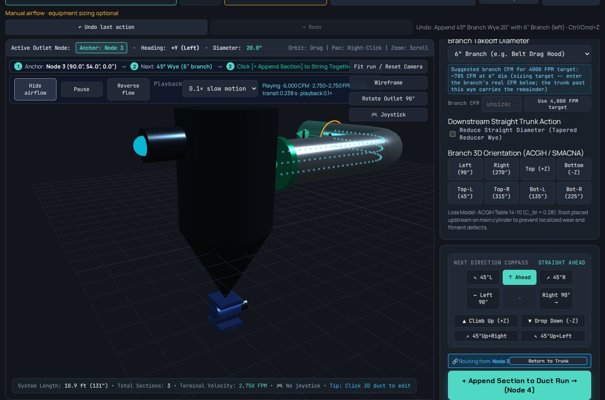
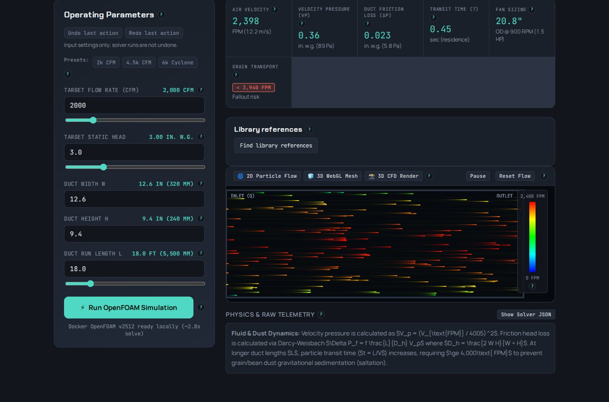

An engineering software business, built in the grain belt
KJLabs builds tools for the people who design, check and run industrial dust-collection systems. This page is the short introduction: what we are working on, what genuinely exists today, what does not, and what we are asking a Kansas SBDC advisor to help us with.
See the working showcase: real screens and four flowcharts →Start with the idea in brief →
What we are building
Two working tools and one idea, all aimed at the same gap: the calculation and the evidence behind it live apart.
KJLabs Simulators
An interactive 3D duct designer for dust-collection systems, plus headless open-source structural and flow solvers driven from CAD. Ducts are sized for transport velocity, and fitting losses carry the table they came from. When the data for a fitting is missing, the tool leaves the value blank and flags it.
CompliSpec
Combustible-dust and grain-handling requirements stored as structured, per-jurisdiction records. A check returns one of three honest outcomes: a pass or fail with its citation, an inspection checklist for a procedural rule, or "not computable" with the missing inputs named.
Engineering operations journal
A lightweight layer that captures what happened on a job in about ten to fifteen seconds, then reuses that one entry for project history, open-loop tracking, search and lessons learned. It is deliberately not a replacement for email or an ERP.
The problem, in three sourced facts
Each of these is published elsewhere and cited here rather than asserted.
Grain dust still explodes
In 2025 the U.S. still had 7 grain dust explosions, killing 4 people and injuring 10 (Purdue University), including one each in Minnesota and Nebraska.
Codes differ by place
OSHA 29 CFR 1910.272 sets the federal baseline for grain handling. State air, fire and licensure rules sit on top of it and change from one state to the next, so a design that is defensible in one state is not automatically defensible in the next.
Sizing still lives in spreadsheets
Duct sizing, structural checks and code requirements are usually three separate tasks that meet again only in a review meeting. The arithmetic is rarely the hard part; reconstructing the assumptions and the source is.
What exists today
Working software, openly described on this site, with its limits stated next to each claim.
| Capability | Status and where to see it |
|---|---|
| 3D duct designer | Working, pilot in use. Straights, elbows with editable centreline radius, reducers, wyes, valves and fans; branch sizing at transport velocity; cited fitting losses. View B1 → |
| CAD to stress, headless | Working. STEP, STL or Onshape in, meshed and solved, rendered stress plot out. View B2 → |
| CAD face selection | Working. Real CAD faces and round load patches, with node counts shown before a solve is spent. View B3 → |
| Airflow and loss quick check | Working. Velocity, velocity pressure, friction loss, residence time, and a local flow solve for comparison. View B4 → |
| Explosion-vent planning view | Working as a planning aid. Illustrative, not a stamped design. View B5 → |
| Requirements as code | Partly working. Minnesota's snow-load rule reaches a real pass/fail against a structural solve; Nebraska's elevator inspection rule renders as a checklist. Other jurisdictions are registers, not yet checks. |
| Validation | Validated within 3% on a redacted real two-pickup dust system (smooth-elbow method; per-component losses still differ). Solvers are validated against reference cases first. How a release ships → |
What does not exist yet
Stated plainly, because a plan built on a capability we do not have is worse than no plan.
Not built
There is no released engineering package: no arbitrary-layout CFD validation, no certified site design, no automatic fan selection, no finished bill of materials or ERP integration, and no manufacturing or compliance approval.
The duct designer's flow preview is a calculated bulk-flow picture, not a CFD or particle simulation. The solvers have been validated on reference fixtures; a fixture is not a customer's geometry.
The compliance checks only exist where a jurisdiction's rules have been encoded and verified. Where they have not, the system says so rather than guessing.
Why this team
The tools are built by the engineer who would use them, and checked against his own field work.
Kevin J. Lund
A manufacturing and mechanical engineer working in grain handling and dust collection. He sets the engineering requirements, marks up each release, reviews the physics, and supplied the field job used to check the duct losses. The tools are shaped around the way he actually designs.
William B. Lund
A software architect who designs the solver orchestration, the geometry engine and the compliance data model. AI coding agents drive the solvers under one rule that has not been relaxed: an agent may write an input deck and read a log, and may never invent a stress, a velocity or a convergence result.
What we are asking the Kansas SBDC
SBDC is the Small Business Administration's resource-partner network: no-cost, confidential advising through centres hosted by universities and state organisations. Knowing what it is for is what makes a first meeting useful.
What we are asking for, in order
- Be our recommending support centre. The Kansas SBIR/STTR matching programme requires applicants to be vetted and recommended through the FAST programme, a support centre, or a grant professional — and Kansas SBDC is a named partner in that programme, per the Kansas Department of Commerce programme page.
- Point us at proposal support. The Kansas FAST programme provides free proposal help. We want an introduction and an honest read on whether we are ready to submit.
- Pressure-test fundability early. The Kansas SBDC Capital Access Center offers loan-eligibility screening and mock-underwriting scenarios. Running that now, with no revenue, shows us what a lender would actually require.
- Introduce the local innovation path. The state proof-of-concept programme administered in Lawrence had a window we missed for this year. We want to know what a strong application would have looked like.
- Help name the buyer. We know the engineering problem and the practitioner. We do not yet know which role at a grain facility signs, which one blocks, and which one merely uses.
- Tell us who else to talk to. Specifically, who in Kansas has taken an NSF Project Pitch through to submission, because that is our first funding target.
What we will not ask for
An SBDC does not lend money, does not invest, and does not write a business plan or negotiate on a company's behalf. We are not coming for capital or for someone else to do the work. We are coming for process knowledge, capital-market reality and referrals.
How the three parts connect
One picture of the whole idea: what is asked, what the tools compute, what gets checked, and what gets remembered.
flowchart LR
JOB([A dust problem at a facility]):::start
ASK[Ask the engineering question]:::act
SIZE[Size the system in 3D at transport velocity]:::act
LOSS[Cited fitting losses, geometry exported]:::res
RULE{Checkable from the data on hand?}:::dec
PASS[Pass or fail with its citation]:::res
LIST[Inspection checklist for a procedural rule]:::res
NONE[Not computable: names the missing input]:::warn
REC[Record the decision and what is still open]:::act
MEM[(Searchable history for the next job)]:::res
JOB --> ASK
ASK --> SIZE
SIZE --> LOSS
LOSS --> RULE
RULE -->|yes| PASS
RULE -->|procedural| LIST
RULE -->|inputs missing| NONE
LOSS --> REC
PASS --> REC
REC --> MEM
classDef start fill:#ede9fe,stroke:#7c3aed,stroke-width:2px,color:#1e1b4b
classDef act fill:#dbeafe,stroke:#2563eb,stroke-width:2px,color:#0f172a
classDef dec fill:#fef3c7,stroke:#d97706,stroke-width:2px,color:#422006
classDef res fill:#dcfce7,stroke:#16a34a,stroke-width:2px,color:#052e16
classDef warn fill:#fee2e2,stroke:#dc2626,stroke-width:2px,color:#450a0a
This is the business flow, not a claim about the software. It shows where a person decides, where a calculation happens, and where an answer has to carry its source. The three outcomes on the right are the whole point: a check that cannot be made from the data on hand says so instead of returning a number. The history at the end is what the next job starts from.
What it actually looks like
Real screens from the working app. Sample geometry only; no customer data.

The duct designer. Lay out a run in 3D, size each branch for transport velocity, and read the fitting losses with the table they came from. Open the full view →

CAD to stress, headless. A STEP or Onshape part is meshed and solved, and the rendered plot comes straight from the solver's own result file. Open the full view →

The airflow quick check. Velocity, velocity pressure, friction loss and residence time in seconds, with a warning when dust would settle out. Open the full view →
Five detail views and four flowcharts in total, all on the showcase page and linked at the end of this one.
How to read the rest of this briefing
| Page | What it answers |
|---|---|
| The idea in brief | What the three internal documents say, and what they add up to. Read → |
| Market and competition | Who else is in this space, where the Midwest concentration is, and which business models a two-person team can actually start. Read → |
| University R&D | A concrete proposal for joint research with Kansas State University and the University of Nebraska–Lincoln. Read → |
| Illustrative plan | A framed example of how a plan would be structured. Aspirational, not an actual plan. Read → |
| The showcase | Real screens, all four flowcharts and the working detail behind every capability above. Open → |
| Detail views | The five screens in full, each with what it is, how an engineer uses it, and what it is not: duct designer · CAD to stress · face selection · airflow quick check · vent planning. |
| Flowcharts | Four step-by-step walkthroughs: the ecosystem · designing a duct run · CAD part to stress plot · how a release ships. |